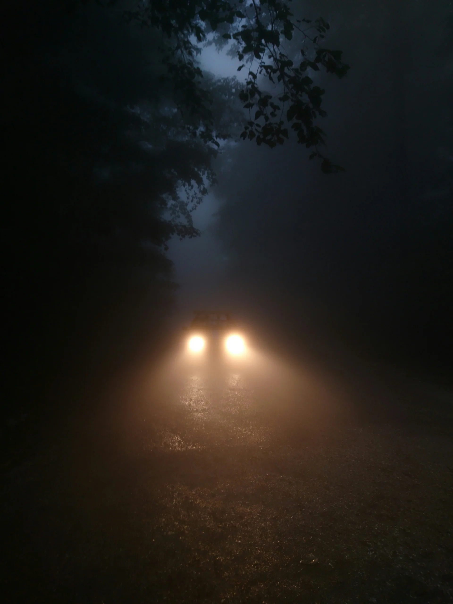

Horror Drive Thru
1. oktober – 31. oktober 2026
Tag vennerne med ind i mørket
Horror Drive Thru er et fiktivt Halloween-event for især unge vennegrupper. I oplever turen gennem en mørk skov fra bilen, mens skuespillere, lyde og iscenesatte overraskelser skaber uhyggen.
Fortsæt på eget ansvar
Kun få er vendt tilbage fra denne vej. De der kom ud, ville ønske de aldrig var gået ind. Hold dørene låst, og vinduerne lukkede. Bliv i bilen, uanset hvad i møder, eller hvem der kalder på jer fra mørket
Også selvom stemmen lyder bekendt.
Hvad sker der i skoven?Her begynder mareridtet
Dybt inde i skoven venter indgangen. Resten af vejen må i selv tage
Ravnemosevej 13
9998 Mørkely
Fiktiv adresse og oplevelse.
Hvad er en horror drive-thru?
En horror drive-thru er en iscenesat gyseroplevelse, hvor deltagerne bevæger sig gennem oplevelsen i bil. I Horror Drive Thru er skoven rammen om turen.
Sådan foregår turen
Sådan er forløbet i det fiktive koncept.
- Ankom før din tid. Ankom gerne 15 minutter før det valgte tidspunkt.
- Find indgangen. Følg skiltningen frem til indgangen, og hav billetten klar.
- Kør ind i skoven. Personalet viser jer ind.
- Oplev turen fra bilen. Undervejs møder I skuespillere, lyde og iscenesatte overraskelser. Bliv i bilen under hele turen, frem til afslutningen.
Ofte stillede spørgsmål
Hvor længe varer turen?
Turen gennem skoven varer omkring 30–40 minutter.
Køber man billet pr. person eller pr. bil?
I konceptet købes billetten pr. bil. Sidder I eksempelvis fire i bilen, skal I kun bruge én billet. Hjemmesidens billetdemo foretager ingen betaling eller rigtig reservation.
Hvor gammel skal man være for at deltage?
Oplevelsen anbefales til børn over 15 år. Det er en anbefaling; hjemmesiden angiver ikke en fast aldersgrænse. For yngre deltagere anbefales tidspunktet kl. 16 samt lukkede døre og vinduer.